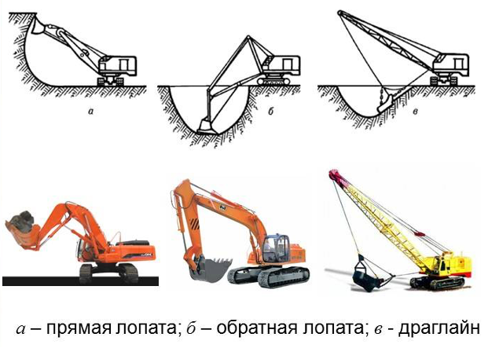
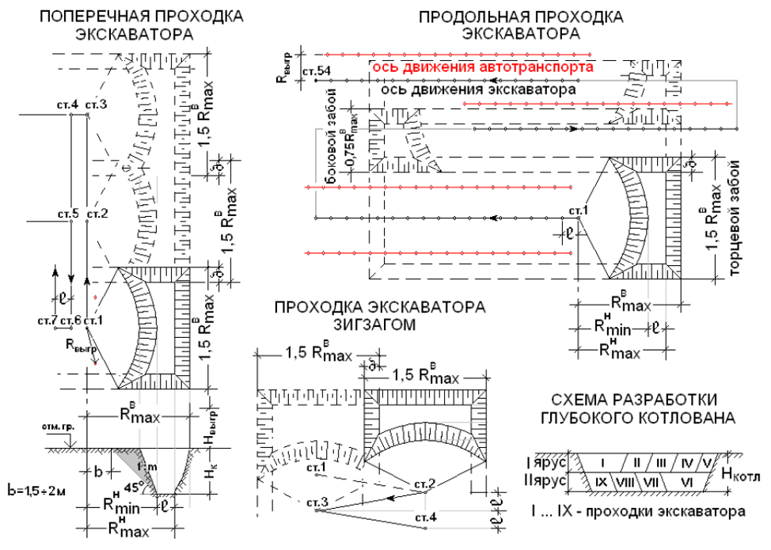
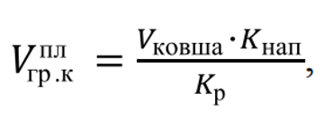
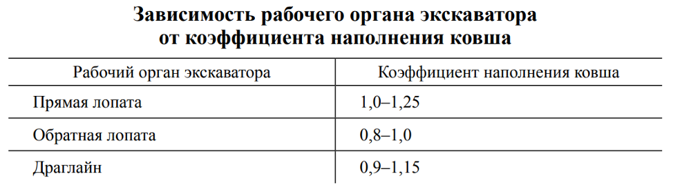
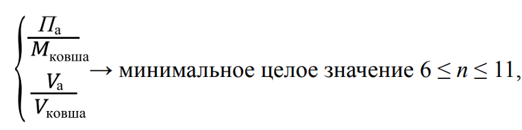
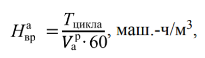
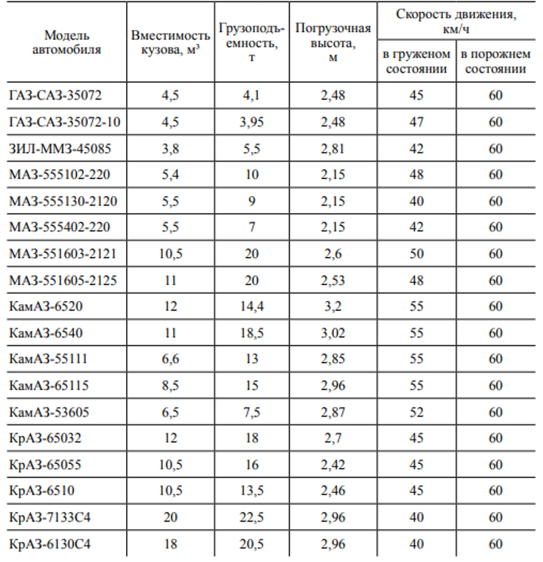

Мастер-класс по выбору надежного экскаватора

От выбора экскаватора зависит скорость и качество строительных работ, особенно, когда нужно разработать мерзлые грунты. В этом уроке вместе с экспертом Школы вы научитесь ориентироваться в параметрах экскаваторов, выбирать подходящую технику и определять нужное количество автосамосвалов.
Как выбрать экскаватор
В начале урока рассмотрим, какие одноковшовые экскаваторы используют в строительстве.
Вид рабочего оборудования экскаватора | Применение |
| Прямая лопата |
|
| Обратная лопата |
|
| Драглайн |
|

Тип хода экскаватора | Применение |
| Экскаватор на гусеничном ходу |
|
| Экскаватор на пневмоколесном ходу |
|
Как выбрать одноковшовый экскаватор «обратная лопата»
Экскаватор с обратной лопатой – самый распространенный вид экскаватора.
При выборе типа и марки экскаватора учитывают:
- объем земляных работ;
- размер выемки;
- грунтовые, климатические условия;
- дальность транспортирования грунта;
- продолжительность работ;
- стесненность фронта работ и ряда других факторов.
Объем работ V, м3 | Емкость ковша, q, м3 |
До 500 | 0,15 |
500-1500 | 0,25-0,3 |
1500-5000 | 0,4-0,5 |
5000-8000 | 0,65 |
8000-11000 | 0,8 |
11000-13000 | 1,0 |
13000-15000 | 1,25 |
15000-20000 | 1,5 |
Более 20000 | 2,5 |
Как экскаваторы работают на мерзлых грунтах
Экскаваторы с ковшами емкостью 0,5—0,65 м3 разрабатывают мерзлые грунты без предварительного рыхления при промерзании на глубину до 0,25 м.
Экскаваторы с ковшами емкостью 1—1,25 м3 – при промерзании на глубину до 0,4 м.
При выборе экскаватора ориентируйтесь на геометрические размеры котлована или траншеи, а также на глубину выемки.

Как выбрать автосамосвалы
Чтобы разработать грунт и переместить его в самоходный транспорт, выбирают автосамосвалы и определяют их количество.
На практике экскаватор отгружает n = 6 – 11 ковшей в кузов автосамосвала.
Изучите формулы, которые помогут вам в работе.
Формула объема грунта в плотном теле в ковше экскаватора

где Kнап — коэффициент первоначального наполнения (табл. 1);
Кp — коэффициент первоначального разрыхления грунта.
Формула массы грунта в ковше экскаватора
где γ — плотность грунта.

Как рассчитать количество ковшей с грунтом, которые загружают в кузов автосамосвала

где Па и Va — грузоподъемность и объем кузова автосамосвала.
Потребное количество автосамосвалов
N ≥ Tцикла /Tпогрузки
где Тцикла — время цикла работы автосамосвала.
Тцикла = Ту.п + Тп + Тпр гр + Тпр пор + Ту.р + Тр + Тм,
где Ту.п — время установки под погрузку, можно принять Ту.п = 0,3 мин;
Тп — время погрузки, мин;
Vа.пл— объем грунта в автосамосвале в плотном состоянии, Vа.пл = n*Vпл гр.к м3;
Нвр — норма времени работы экскаватора с погрузкой в кузов автосамосвала;
Тпр гр — длительность пробега автосамосвала в груженом состоянии;
Тпр гр = L/Uгр ∙ 60, мин;
L — дальность транспортирования грунта;
Uгр — скорость автосамосвала в груженом состоянии, км/ч;
Тпр пор — длительность пробега автосамосвала в порожнем состоянии;
Тпр пор = L/Uпор ∙ 60, мин;
Uпор — скорость автосамосвала в порожнем состоянии, км/ч;
Ту.р — время установки под разгрузку, можно принять Ту.р = 0,6 мин;
Тр — время разгрузки, можно принять Тр = 1 мин;
Тм — время маневрирования, можно принять Тм = 2 мин.
Расчетное количество автосамосвалов для бесперебойной работы экскаватора округляют до ближайшего большего числа.
Формула нормы времени работы автосамосвала

где разрыхленного грунта в кузове автосамосвала = Vковша ∙ kнап ∙ n, м3.
Рассмотрите таблицу с примерами самосвалов, которые используют в строительстве:

Урок окончен. Теперь вы умеете выбирать экскаватор для разных видов строительных работ и знаете формулы, которые помогут вам сделать нужные расчеты. Возвращайтесь к формулам и таблицам, когда возникнет необходимость.
В следующем курсе вместе с преподавателем Школы потренируетесь составлять организационно-технологические документы (ППРпс, ППРв, ТК).